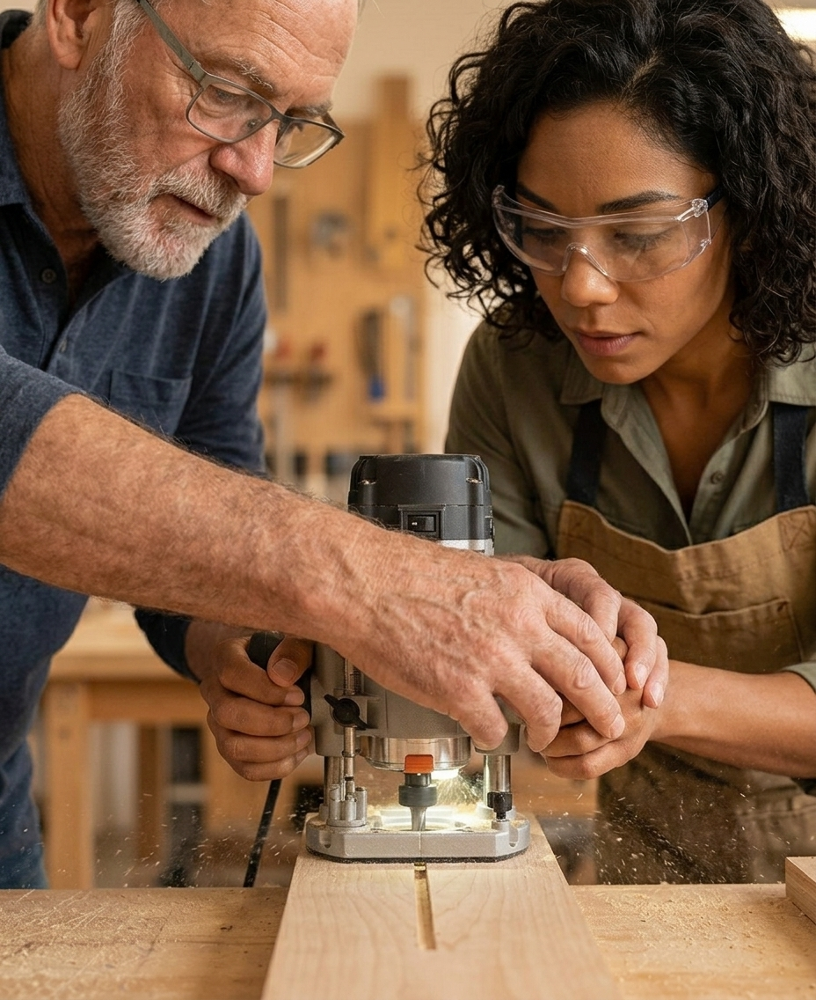
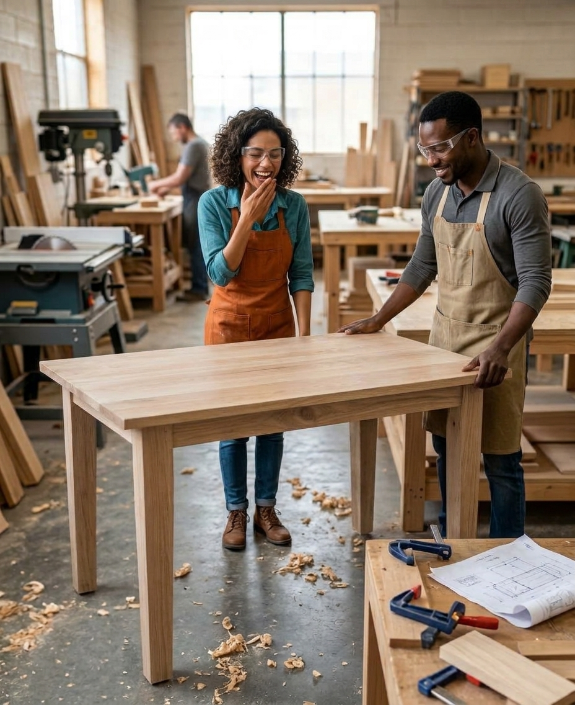
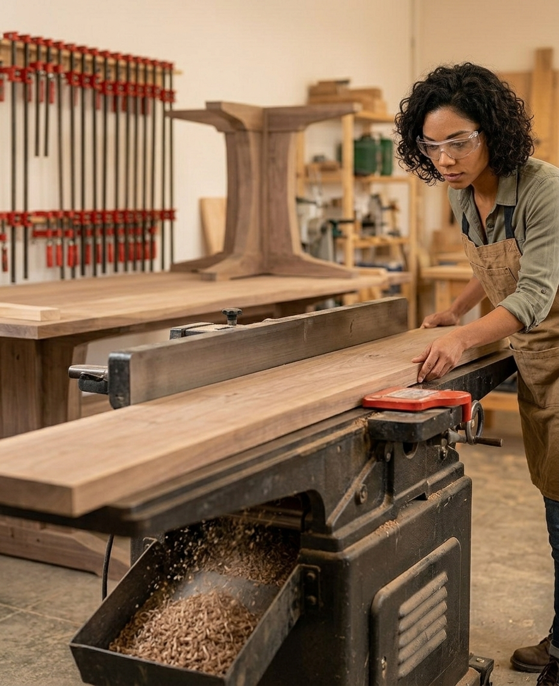
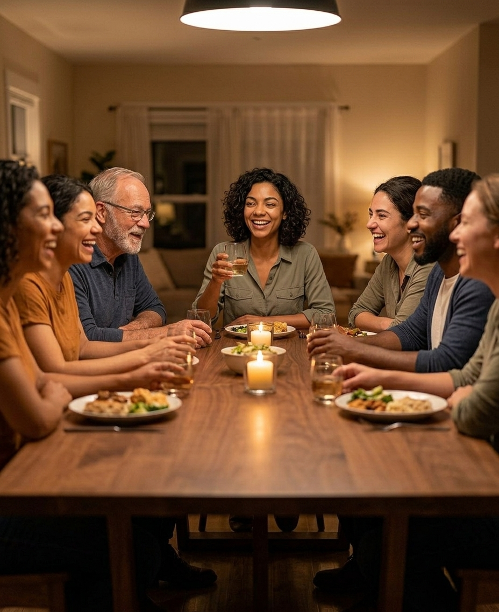

Follow Ann's table from a dream to the dinner.
She has no idea how to build it.
No tools. No workshop. A one-car garage that's already full. And a YouTube playlist that makes it all look easy.
A workshop she doesn't have at home.
Safe, supervised and open to everyone: a third place that isn't home and isn't work.
One member suggests tapered legs. Another shows her how to 3D-print a tiny model of the table before she cuts a single board.
Like Pinterest or YouTube inspiration — except you can touch it and ask it questions.

Walt has never met Ann. He shows her the router anyway, then signs her up for the woodshop safety class. Find the right tool for the job, even if you don't know what it's called.
Badly. Everyone laughs, Ann included.
Here, a hilarious flop counts just as much as a masterpiece. Nobody judges — the person at the next bench has a drawer full of their own failed first tries.


A jointer she'd never buy. Clamps by the dozen. Space for a project too big, too loud and too messy for her garage.
Dust, chips and smoke: we don't judge, just clean up afterward.
Her family. Her neighbors. And Walt, who swears he can't find the wobbly leg.

The beginner becomes the teacher. Everyone knows something you don't, and they're itching to share it.
Every skill shared multiplies — pay it forward. This is the moment the loop closes and starts again.
Foothills Art Center, festivals, theater, and pottery classes filled to the brim.
But there's nowhere to share a table saw, a laser cutter or a 3D printer — or to learn from the person at the next bench.
Place
A workshop you don't have at home — safe, supervised, open to all.
People
Mentors, friends and instructors — know-how from beginner to expert.
Stuff
Tools, machines and materials — too big, messy or loud for a garage.
Come to the monthly Golden Makers Social Club.
Tell us what you'd make, in our community survey.
Lend your tools, your skills or your dollars.
Golden Makers · Golden, Colorado
Place
People
Stuff
Share
Make
Learn
Dream